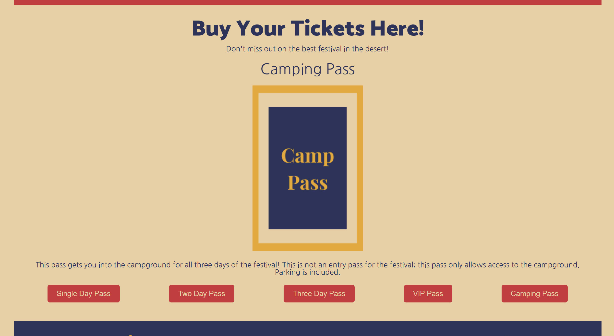
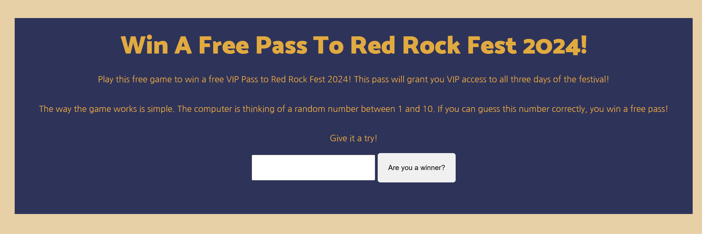

Red Rock Fest
-

- 
- 
Background
“Red Rock Fest 2024” was a final project for an advanced web dev class at ASU. I wanted to create a festival page based on some of my favorite festival pages online right now, like Aftershock.
Skills
- HMTL, CSS, & JavaScript
- UI/UX Design
- Research & Problem-Solving
Process
I wanted to blend the color scheme with the setting, taking on a desert/red rocks theme to help create a more uniform feeling of the whole festival. I used a carousel for my ticket display, where users can click on their preferred option at the bottom of the screen and the image above changes. The game I created had users pick a number between 1 and 10. The system would pick a randomly generated number and if the numbers matched, the user would win a free ticket.
Summary
The results were a festival web page that felt like a “rock” fest. With the use of “rocky” fonts and red and tan color scheme, you really feel like you’re entering the desert. This is a comprehensive site where users can learn about the festival, buy their tickets, and reach out for more information.